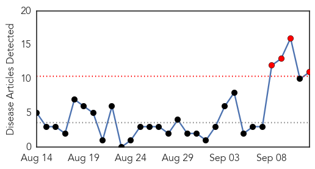
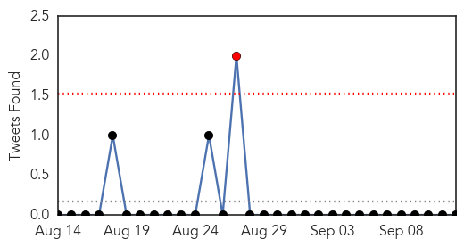
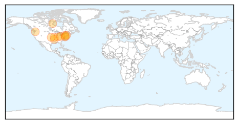
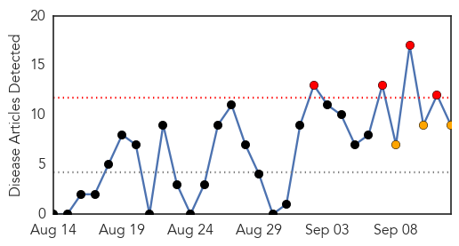
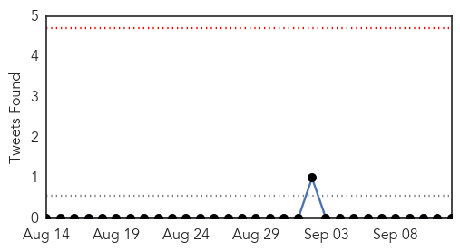
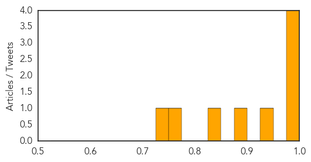

Influenza
30-Day Web Trend
4 alerts, 0 warnings

30-Day Twitter Trend
1 alerts, 0 warnings

Article Locations
Article Confidences
Top Articles:
- 0.999
- Respiratory virus that hits kids might be in CT
- 0.987
- Fifteen children hospitalized, may be nasty strain of common virus
- 0.985
- Over a dozen children diagnosed with enterovirus EV-D68 in NY
- 0.982
- Serious respiratory infection spreads to kids in New York
- 0.975
- Midwest virus reaches NY
- 0.968
- Lafayette girl home after being under enterovirus quarantine
- 0.967
- Immunisation rates disappoints
- 0.940
- Samples of respiratory illness that sickened 12 Delaware kids sent to CDC
- 0.932
- Virus fears lead area hospitals to ban child visitors
- 0.857
- Three potential cases of respiratory enterovirus D68 in Arkansas
- 0.792
- Bernards Township Health Department schedules four flu shot clinics
Top Tweets:
-
No tweets found for Sep 12, 2014
Dengue Fever
30-Day Web Trend
4 alerts, 3 warnings

30-Day Twitter Trend
0 alerts, 0 warnings

Article Locations

Article Confidences
Top Articles:
- 0.999
- Dengue Fever Outbreak Catches Tokyo by Surprise
- 0.995
- Epidemic scale: After Swat, dengue virus infects Mansehra
- 0.994
- Number of dengue virus infections in Japan rises to 115
- 0.986
- Dengue fever outbreak feared
- 0.926
- Health ministry updates manual for dengue fever
- 0.886
- Residents told: Don't panic over unconfirmed typhoid
- 0.839
- Conditions at Tata Steel plant blamed for hundreds of dengue cases in east India
- 0.752
- Conditions at Tata Steel plant blamed for hundreds of dengue cases in Odisha
- 0.749
- Cebu News, The Freeman Sections, The Freeman
Top Tweets:
-
No tweets found for Sep 12, 2014